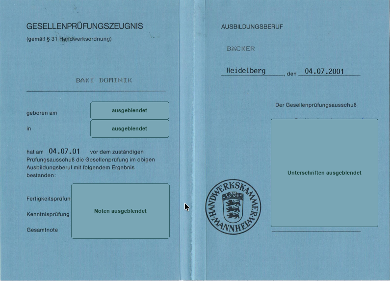

Native Anwendungen
Swift, SwiftUI, SwiftData, MapKit, Kotlin und Jetpack Compose für fokussierte iOS- und Android-Anwendungen.
Team · Dominik Baki
Als Gründer von byte & Handwerk verbinde ich praktische Erfahrung aus dem Lebensmittelhandwerk mit Produktentwicklung und nativer App-Entwicklung.

Aufgabe bei byte & Handwerk
Meine Aufgabe beginnt nicht mit einem Feature oder einer technischen Idee. Sie beginnt mit den Menschen, ihren Arbeitsabläufen und der Frage, welche Entscheidung oder welcher Prozess tatsächlich besser werden soll.
Ich strukturiere den Bedarf, prüfe Annahmen mit den Beteiligten und übersetze bestätigte Anforderungen in einen bewusst begrenzten Piloten. Wenn eine digitale Lösung sinnvoll ist, begleite ich sie von der Konzeption bis zur auslieferbaren Anwendung.
Ein begründetes Nein gehört dabei genauso zur Arbeit wie ein funktionierender Prototyp. Entscheidend ist nicht, dass gebaut wird, sondern dass die nächste Entscheidung nachvollziehbar und wirtschaftlich sinnvoll ist.
Handwerkliche Qualifikation
Am 4. Juli 2001 habe ich die Gesellenprüfung im Ausbildungsberuf Bäcker vor dem zuständigen Prüfungsausschuss bestanden. Der Nachweis macht den handwerklichen Hintergrund hinter byte & Handwerk nachvollziehbar.
Für die Veröffentlichung wurden Geburtsdaten, Einzelnoten und Unterschriften aus Datenschutzgründen ausgeblendet.

Technische Kompetenz
Keine abstrakten Prozentwerte, sondern Technologien und Methoden, die in Ausbildung, Projektarbeit und Pilotanwendungen praktisch eingesetzt wurden.
Swift, SwiftUI, SwiftData, MapKit, Kotlin und Jetpack Compose für fokussierte iOS- und Android-Anwendungen.
Firebase Authentication, Firestore, Supabase, REST-Schnittstellen, SQL-Grundlagen und nachvollziehbare Datenmodelle.
MVVM, Clean Architecture, GitHub Actions, TestFlight sowie iterative Entwicklung mit dokumentierten Feedbackschleifen.
Ausgewählte Projekte
Die Projekte zeigen unterschiedliche Branchen. Die Methode bleibt gleich: Problem verstehen, Umfang begrenzen, mit echten Nutzern prüfen und aus den Ergebnissen entscheiden.
Native iOS-App für kleine Jagdgemeinschaften, entwickelt mit einer realen Pilotgruppe und fortlaufendem Praxisfeedback.
Digitale Stempelkarte für das Lebensmittelhandwerk. Aus einem Abschlussprojekt entstanden, heute eine Web-App mit serverseitiger Stempelvergabe gegen Kaufnachweis, Wallet-Pässen und eigener Verwaltung für den Betrieb.
IHK-Abschlussprojekt: ein iOS-MVP zur strukturierten Unterstützung von Familien bei der Vorbereitung einer Auswanderung.
Beruflicher Hintergrund
Handwerk, regulierte Produktion, Vertrieb und Softwareentwicklung prägen die Fragen, mit denen ich heute in Projekte gehe.
Eigene Ausbildung und praktische Erfahrung mit Zeitdruck, Frische, Übergaben und Entscheidungen im laufenden Betrieb.
Viele Jahre in regulierten Produktionsumgebungen mit hohen Anforderungen an Präzision, Dokumentation und Nachvollziehbarkeit.
Erfahrung mit Bedarfsklärung, Kundenkommunikation und der Grenze zwischen ehrlicher Beratung und vorbereiteter Überredung.
Rund 2.300 Unterrichtseinheiten in nativer iOS- und Android-Entwicklung sowie ein IHK-Zertifikatslehrgang zum iOS App Developer.
Kennenlernen
Im 20-Minuten-Gespräch klären wir Ausgangslage, Voraussetzungen und den kleinsten prüfbaren nächsten Schritt. Das Ergebnis kann auch ein begründetes Nein sein.
20-Minuten-Termin vereinbaren